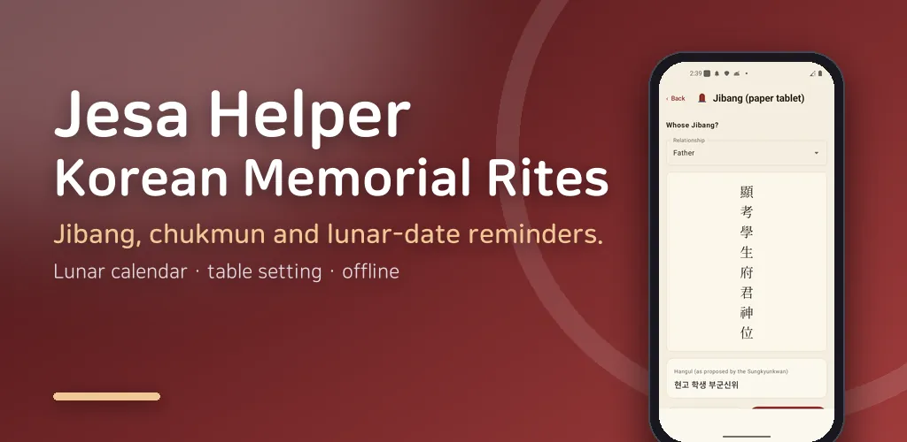
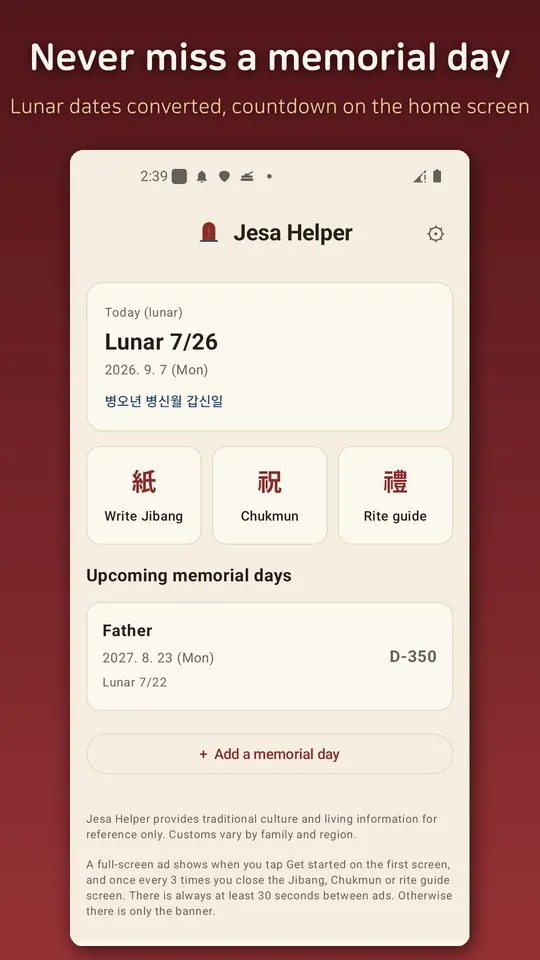
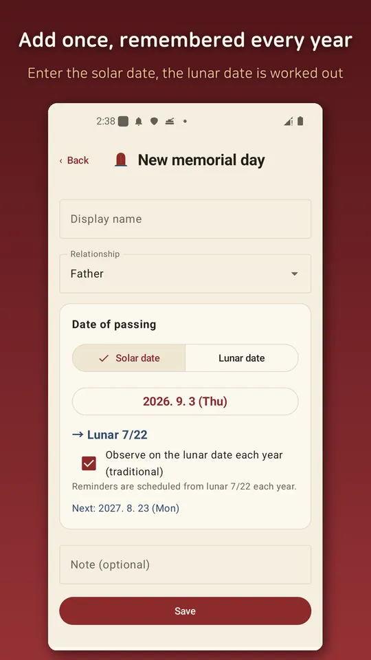
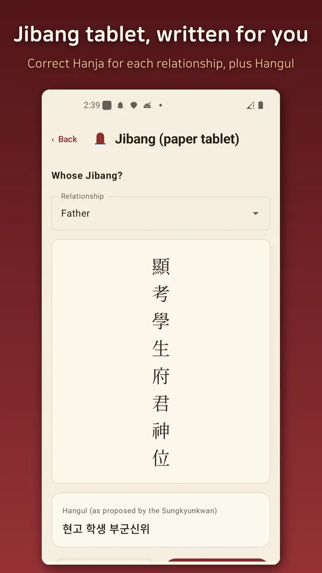
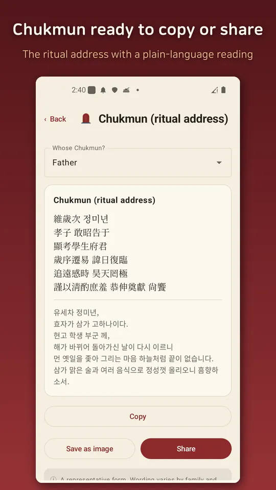

Jesa: Korean Memorial Rites
Write jibang and chukmun, set the altar, and get lunar memorial-day reminders.





About this app
"Which date is my father's memorial day this year?" Korean lunar memorial days (gi-il) fall on a different solar date every year, and leap months make it even trickier. Jesa Helper lets you register an ancestor's memorial day once; it converts to the correct solar date every year and schedules the reminders for you in advance.
What it helps with
1. You don't need to know the lunar date
- Just pick the date of passing from a normal (solar) calendar, and the app shows you the matching lunar date right away.
- Already know the lunar date? Enter it directly, leap months included.
- Choose how it repeats each year: lunar (traditional) or solar — whichever your family follows.
2. Memorial-day reminders (fully offline)
- Once registered, the app calculates that year's solar date automatically.
- Schedules advance notifications at D-7 / D-3 / D-1 and the day itself, so you always have time to prepare.
- Uses KASI (Korea Astronomy and Space Science Institute) lunar data offline, and handles leap-month memorial days according to family custom.
- Solves the yearly lunar recurring reminder that Google/Apple Calendar can't handle natively.
3. Hand it off to your device calendar (no permissions needed)
- When you save a memorial day you can also add it to your calendar — just the next date, or the next 20 years at once.
- Even if the system puts the app to sleep because you have not opened it in months, what you moved to the calendar stays there.
4. Jibang (紙榜) generator — no need to know how to write one
- Just pick your relationship to the deceased and their gender, and the app completes the jibang text such as `顯考學生府君神位` (with Hanja and Korean readings side by side).
- Save it as a vertical-writing image and share it, so you never have to look up "how to write a jibang" again.
5. Chukmun (memorial address) generator
- Pick the relationship and basic details to get a sample chukmun.
6. Rite & holiday guide
- Altar arrangement (jinseol), the order of the rite, and how to bow — organized clearly.
- Reflects the simplified standard proposed by the Sungkyunkwan in 2022.
7. Today's lunar date & sexagenary cycle (ganji)
- See today's lunar date and ganji (干支) at a glance.
Everything runs on your device without internet. No sign-up, no personal data entry, and the memorial-day info you register never leaves your device. 100% free, 100% offline.
- Reminders may be delayed or hidden depending on your device battery and unused-app settings. For memorial days that matter, also add them to your calendar from inside the app.*
- The jibang, chukmun, altar, and bowing guidance is reference information based on tradition and common practice. Customs vary by family and region (gagarye) — use it as a reference, not a rulebook.*
Android · free with ads · Developer: RealTunaLove · Store listing in 17 languages
Background story: why I built it